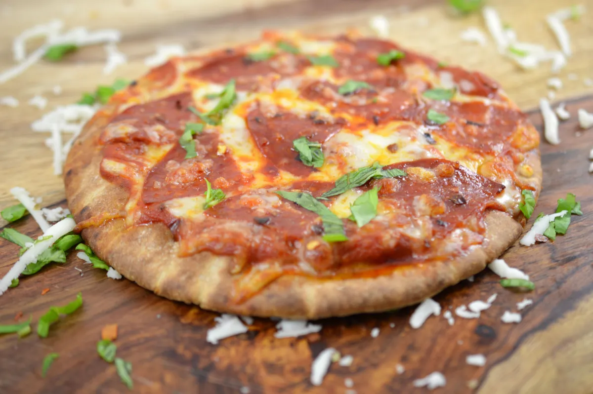

Pita Pizza

Description
This recipe takes 12 minutes of baking at 375-425 degrees fahrenheit.
Ingredients Required
- Pita Bread of Preference
- Marinara Sauce
- Mozarella Cheese
How to Prepare The Dish
- First put as many pita bread slices as you wish to eat on a stone or platter.
- Add the marinera sauce to the amount where you can almost still see the pita bread
- Then put as much cheese as needed so long as about a third or a fourth of the marinara sauce is seen underneath.
Return to Homepage